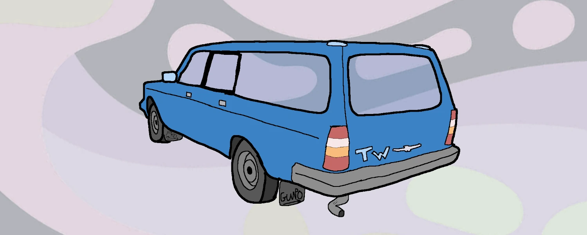
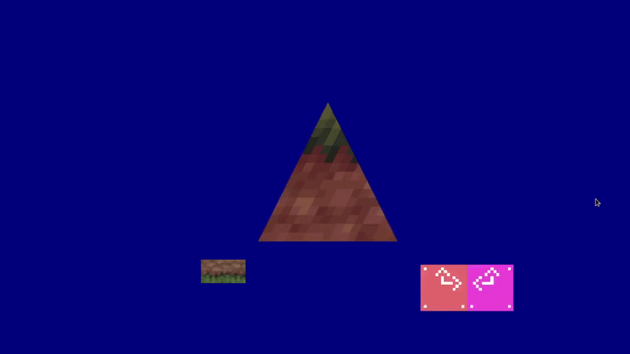
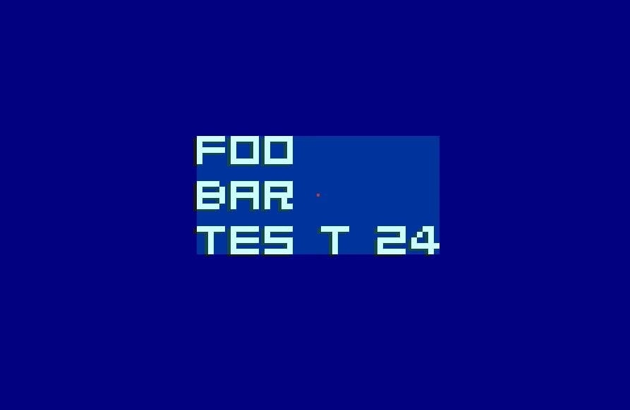

tinywagon
MADE WITH
MADE WITH

"tinywagon" is a tiny, lightweight and easy-to-use game development framework built to get a small project up and running as soon as possible! Built with OpenGL3.3 using C++23 standard.

I built tinywagon with the purpose of further familiarizing myself with the OpenGL ecosystem. Personally, I've previously used a more established library called SFML, I was not a fan with how the library was designed. I often found myself writing a lot of boilerplate code. Then I switched to a library called Raylib, where I found the complete opposite. It was very simple, easy to use and very well documented.
From this, I was inspired to write and create my very own simple 2D game making framework from scratch! Where I took multiple design patterns from the Raylib library and applied to to my own rendering library.
Library features:
